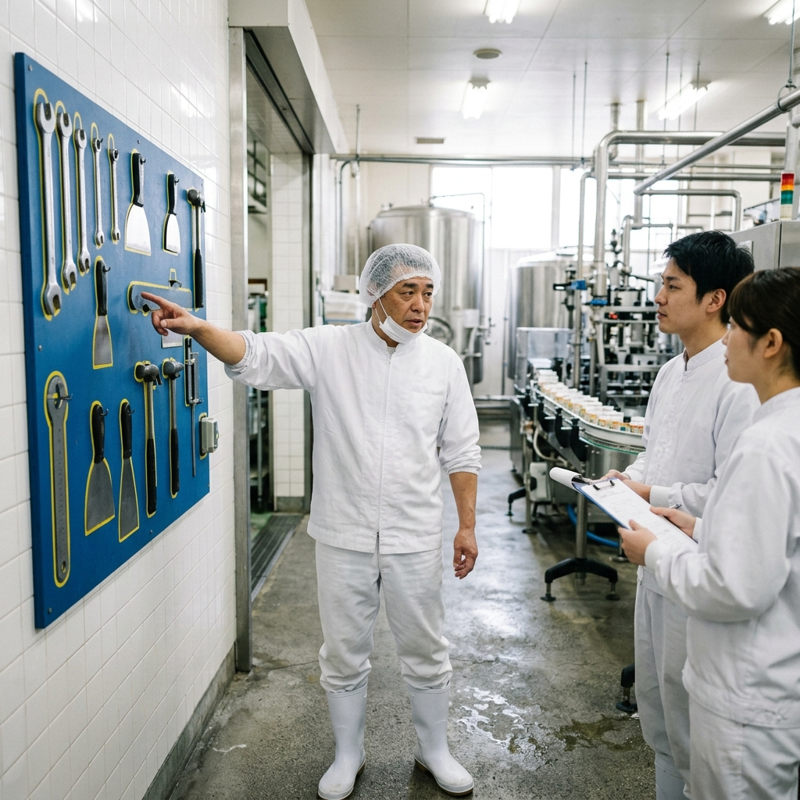

「整理（Seiri）」「整頓（Seiton）」「清掃（Seisou）」「清潔（Seiketsu）」「しつけ（Shitsuke）」からなる5S活動。
どの食品工場でもスローガンとして掲げられていますが、「何度言っても片付かない」「大掃除の時だけしか綺麗にならない」など、活動が形骸化（定着しない）している現場は少なくありません。
5SはHACCPシステムの土台（一般的衛生管理プログラム: PRP）として最も重要な要素です。なぜ定着しないのか、現場を突き動かす「真の5S活動」の進め方を解説します。
多くの工場で失敗する理由には共通点があります。まずは心当たりがないかチェックしてみましょう。
よくある誤解が「5S＝大掃除」という認識です。5Sの本当の目的は、見た目を美しくすることではなく「異常（汚れ、設備の破損、虫の発生など）にすぐに気付ける環境を作ること＝安全性・生産性の向上」です。目的が「綺麗にする」になっていると、作業が終わって疲れている現場からは「面倒くさい業務の押し付け」と捉えられてしまいます。
「ちゃんと整頓して帰って」「しっかり掃除して」という指示では、人によって「ちゃんと」の基準が異なります。どこに、何を、いくつ置くのが正解なのか。どの程度の綺麗さが合格ラインなのか。「基準」がないため評価も指導もできず、徐々に乱れていくのです。
「やれ」と言われたことは、監視の目がなければやりません。現場が自ら「ここをこう変えたい」と発信し、それを会社が認める・評価するサイクルがないと、自律的な5S活動は長続きしません。
精神論に頼らない、自律的に回る「仕組み」への転換方法をご紹介します。
まずは「要るもの」と「要らないもの」を分けること（整理）から始まります。「いつか使うかもしれない」と迷うものには「赤札（赤いシールやタグ）」を貼り、「1ヶ月使わなければ捨てる」など明確なルールで強制的に処分します。
※注意：整理が終わっていない状態で、棚を作ったりラベルを貼ったり（整頓）してはいけません。不用品を綺麗に並べるための棚は無駄でしかありません。
正解の基準を「文字」ではなく「写真」で共有します。最も綺麗に片付いている状態を写真に撮り（定点撮影）、「作業終了後はこの写真と同じ状態に戻して帰る」というルールにします。これなら新人や外国人スタッフが見ても、正解（基準）が一目でわかります。
「使ったら元の場所に戻す」を習慣化するために、ツールボードに道具の形をくり抜いたシールを貼ったり、テープで枠線を引く「姿置き」を採用します。パッと見て何が足りないのか（ハサミの持ち出し中など）が一瞬で判別でき、異物混入防止にも直結します。
「しつけ（習慣化）」の段階で最も欠けているのが「承認」です。できていない時だけ怒るのではなく、「5Sパトロール」を月に1回実施し、最も改善が見られた部署を表彰するなどのポジティブな評価制度を取り入れましょう。
まとめ：5Sは「利益を生む」経営戦略である
モノを探す時間が1日10分あれば、年間で莫大な人件費のロスになります。また、整理整頓された工場は、そのまま「異物混入・食中毒リスクが低い工場」を意味します。
5S活動は単なる美化活動ではなく、ムダを省き品質を高める立派な「経営戦略」です。「やらされる作業」から「誇りを持って守るルール」へ、現場の意識を変えていきましょう。
HACCP構築の前提となる「5S定着化」を支援します
社内だけではなかなか進まない、現場の反発が大きいなどのお悩みはありませんか？
第三者目線からの客観的な工場診断と、現場が主体的に動く仕組みづくりをサポートいたします。
※当サイトはAmazonアソシエイト・プログラムの参加者です。